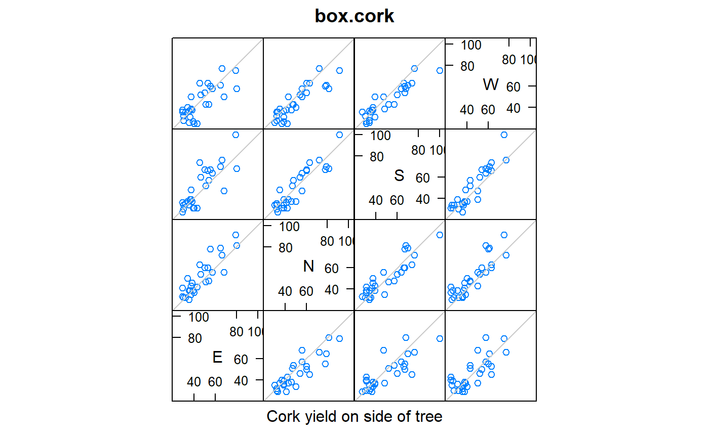
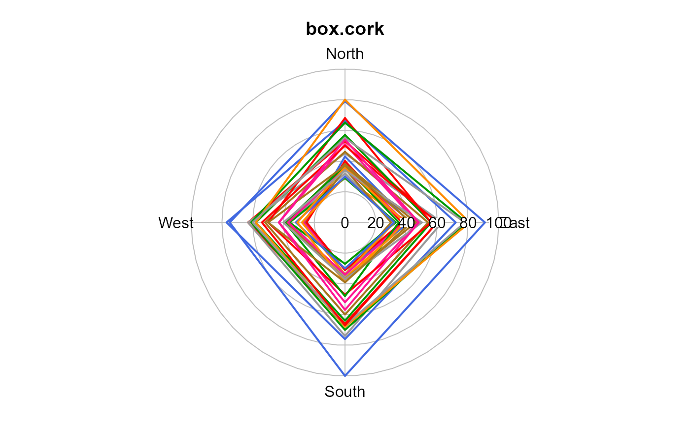

box.cork.RdThe cork data gives the weights of cork borings of the trunk for 28 trees on the north (N), east (E), south (S) and west (W) directions.
Data frame with 28 observations on the following 5 variables.
treetree number
dirdirection N,E,S,W
yweight of cork deposit (centigrams), north direction
C.R. Rao (1948). Tests of significance in multivariate analysis. Biometrika, 35, 58-79. http://doi.org/10.2307/2332629
K.V. Mardia, J.T. Kent and J.M. Bibby (1979) Multivariate Analysis, Academic Press.
Russell D Wolfinger, (1996). Heterogeneous Variance: Covariance Structures for Repeated Measures. Journal of Agricultural, Biological, and Environmental Statistics, 1, 205-230.
data(box.cork) dat <- box.cork libs(reshape2, lattice) dat2 <- acast(dat, tree ~ dir, value.var='y') splom(dat2, pscales=3, prepanel.limits = function(x) c(25,100), main="box.cork", xlab="Cork yield on side of tree", panel=function(x,y,...){ panel.splom(x,y,...) panel.abline(0,1,col="gray80") })libs(plotrix) libs(reshape2) ## Each tree is one line dat2 <- acast(dat, tree ~ dir, value.var='y') radial.plot(dat2, start=pi/2, rp.type='p', clockwise=TRUE, radial.lim=c(0,100), main="box.cork", lwd=2, labels=c('North','East','South','West'), line.col=rep(c("royalblue","red","#009900","dark orange", "#999999","#a6761d","deep pink"), length=nrow(dat2)))if(0){ # asreml3 libs(asreml) data(box.cork) dat <- box.cork # Unstructured covariance dat$dir <- factor(dat$dir) dat$tree <- factor(dat$tree) dat <- dat[order(dat$tree, dat$dir), ] # Unstructured covariance matrix m1 <- asreml(y~dir, data=dat, rcov = ~ tree:us(dir, init=rep(200,10))) ## Note: 'rcor' is a personal function to extract the correlation ## round(rcor(m1)$dir, 2) ## E N S W ## E 219.93 223.75 229.06 171.37 ## N 223.75 290.41 288.44 226.27 ## S 229.06 288.44 350.00 259.54 ## W 171.37 226.27 259.54 226.00 # Factor Analytic with different specific variances # Note: Wolfinger used a common diagonal variance m2 <- update(m1, rcov=~tree:facv(dir,1)) ## round(rcor(m2)$dir, 2) ## E N S W ## E 219.94 209.46 232.85 182.27 ## N 209.46 290.41 291.82 228.43 ## S 232.85 291.82 349.99 253.94 ## W 182.27 228.43 253.94 225.99 } # ---------------------------------------------------------------------------- ## libs(asreml4) ## data(box.cork) ## dat <- box.cork ## # Unstructured covariance ## dat$dir <- factor(dat$dir) ## dat$tree <- factor(dat$tree) ## dat <- dat[order(dat$tree, dat$dir), ] ## # Unstructured covariance matrix ## m1 <- asreml(y~dir, data=dat, ## resid = ~ tree:us(dir, init=rep(200,10))) ## libs(lucid) ## vc(m1) ## # Note: 'rcor' is a personal function to extract the correlation ## # round(rcor(m1)$dir, 2) ## # E N S W ## # E 219.93 223.75 229.06 171.37 ## # N 223.75 290.41 288.44 226.27 ## # S 229.06 288.44 350.00 259.54 ## # W 171.37 226.27 259.54 226.00 ## # Factor Analytic with different specific variances ## # Note: Wolfinger used a common diagonal variance ## # FIXME - does not work with asreml4 ## m2 <- update(m1, resid = ~tree:fa(dir,1)) ## # round(rcor(m2)$dir, 2) ## E N S W ## # E 219.94 209.46 232.85 182.27 ## # N 209.46 290.41 291.82 228.43 ## # S 232.85 291.82 349.99 253.94 ## # W 182.27 228.43 253.94 225.99